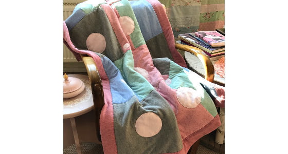
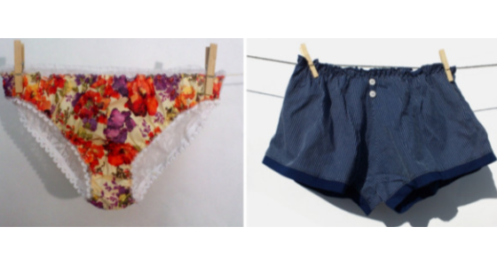
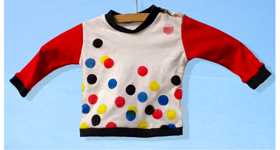
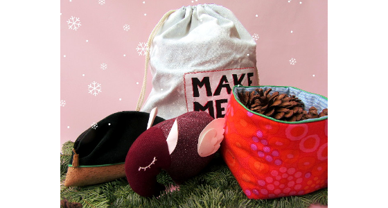
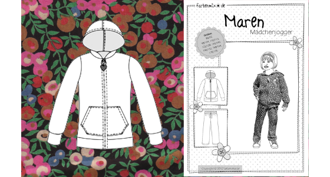
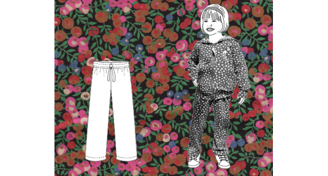

Hallo,
zurzeit befinde ich mich noch mit meinem süßen Baby in Elternzeit. Ab Oktober geht es aber wieder mit den Kursen los. Oktober bis Dezember werden der hohen Nachfrage wegen ausschließlich Anfängerkurse stattfinden. Die Termine dazu findet ihr weiter unten. Themenwünsche für weiterführende Kurse nehme ich gern entgegen und versuche diese dann ab 2020 umzusetzen. Habt ihr ansonsten Fragen zum Nähen? Dann kontaktiert mich gern per Mail oder telefonisch!
| Kurs | Datum | Zeit |
|---|---|---|
| Anfängernähkurs A | 7., 14. und 21. Oktober | 19-21 Uhr |
| Anfängernähkurs B | 28. Oktober, 4. und 11. November | 19-21 Uhr |
| Anfängernähkurs C | 18. und 25. November und 2. Dezember | 19-21 Uhr |
Ihr erlernt die Bedienung der Nähmaschine von Grund auf (Unterfaden aufspulen, einfädeln, geradeaus nähen, um die Ecke nähen, Schnittkanten versäubern...). Als fertiges Werkstück entsteht ein gefüttertes Täschchen mit Reißverschluss.

Wer das Zick-Zack betritt, kommt an Violas wunderschönen Patchworkdecken nicht vorbei. Endlich gibt es nun auch den passenden Kurs dazu. Lernt alle Tricks, mit denen Ihr Euch das Quilten leichter macht und fertigt Eure ganz individuelle Patchworkdecke nach der freien Schnitttechnik an! Die Kursteilnehmer erhalten am Ende des Kurses ein bebildertes Handout zum Projekt. Achtung: Zwischen den Kurseinheiten gibt es Hausaufgaben ;)

Anhand eines gut passenden Pullovers wird ein individueller Schnitt erstellt. Ihr erlernt die Verarbeitung von Sweatshirt-Stoff und Bündchenware. Als fertiges Stück nehmt ihr einen schicken, neuen Pullover bzw. ein Pulli-Kleid mit nach Hause.

Anhand eines gut passenden T-Shirts wird ein individueller Schnitt erstellt. Ihr erlernt die Verarbeitung von Jersey und Bündchenware. Als fertiges Stück nehmt Ihr ein schickes, neues T-Shirt oder Shirt-Kleid mit nach Hause. Die Kursteilnehmer erhalten am Ende des Kurses ein bebildertes Handout zum Projekt.

Anhand Eurer persönlichen Maße und individuellen Ansprüche erstellt Ihr Euch Euren eigenen Schnitt und näht einen Tellerrock mit Reißverschluss. Außerdem werden noch verschiedene Variationsmöglichkeiten aufgezeigt. Die Kursteilnehmer erhalten am Ende des Kurses ein bebildertes Handout zum Projekt.

Ihr erlernt den Umgang mit feinen Materialien, Spitze und Elastik. Es wird ein Höschen nach einem von zwei möglichen Schnitten von mir genäht und ein Unterhemd, wo wir den Schnitt anhand eines gut passenden Unterhemds oder Tanktop selber erstellen.

Es kann aus folgenden Projekten gewäht werden: Lätzchen, Mütze, Dreieckstuch, T-Shirt (Langarm oder Kurzarm). Je nach eigenem Tempo entstehen ein oder mehrere Projekte im Kurs. Schnitte gibt's gratis zum Kurs dazu.

Es wird die Tasche “Pop the Corks” aus dem CUT-Magazin Nr12 genäht. Ihr erlernt die Verarbeitung von festen Materialien wie Canvas, Kork oder (Kunst-)Leder sowie von Gurtband, Karabinern, Reißverschlüssen und so weiter. Es handelt sich um eine größere Tasche mit kleinem Innenfach

Ihr könnt aus folgenden Projekten wählen:
Stoffkörbchen, Hipster-Rucksack, Kosmetiktäschchen oder Weihnachtstapir.

Anhand des Schnittes “Maren” von Farbenmix zeige ich euch den Umgang mit Papierschnitten und dann wird natürlich die Sweatjacke genäht.

Anhand des Schnittes “Maren” von Farbenmix zeige ich euch den Umgang mit Papierschnitten und dann wird natürlich die Jogginghose genäht. Ihr erlernt in diesem Kurs den Umgang mit Sweatshirtstoffen und Bündchenware und bei Bedarf zeige ich Euch auch gern, wie ihr ganz einfach und freihand noch Hüftpassentaschen hinzufügt. Eine Anleitung ist beim Schnitt von Farbenmix enthalten und obendrauf könnt ihr euch im Anschluss noch online kostenfrei die Fotoanleitung herunterladen.

Hallo und herzlich willkommen bei meinen Nähkursen.
Durch eine großzügig berechnete Kurszeit und kleine Gruppen (maximal vier Personen) entsteht in den Kursen eine entspannte Atmosphäre, in welcher ganz in Ruhe an dem jeweiligen Projekt gearbeitet werden kann. Ich leite euch so an, dass ihr auch nachher in der Lage seid, das Gelernte zu Hause anzuwenden. Zu jedem Kurs gibt es außerdem ein Handout mit bebilderter Anleitung.
Ihr könnt eure eigenen Nähmaschinen mitbringen oder natürlich auch gern auf einer von
unseren Maschinen nähen. Jetzt macht es euch bequem und sucht euch den passenden Kurs raus!
Bei Fragen ruft einfach an oder schreibt mir eine Nachricht!

Ich bin Anne.
Angefangen hatte alles mit einer ganz bestimmten Tasche, die ich mir vorgestellt hatte, aber so natürlich in keinem Laden gefunden habe. Da hab ich mir den (aus heutiger Sicht) wohl unpassendsten Stoff ausgesucht, der mir zur Verfügung stand, mir von meinem Vater die alte Nähmaschine erklären lassen und habe unter Vernachlässigung sämtlicher Gesetze des räumlichen Denkens meine Traumtasche selber genäht.
“Hui, das ist ja gar nicht so schwer,” war meine Erkenntnis und eine Leidenschaft war geweckt. Seitdem ist viel passiert und mitler Weile nähe ich mir so ziemlich meine gesamte Garderobe selber.
Ich habe einen Abschluss in Art&Design als auch in Ergotherapie und habe irgendwann sämtliches Wissen, welches sich in mir angesammelt hat in einen Topf geworfen und begonnen Nähkurse zu geben.
In wirklich entspannter Atmosphäre erkläre ich die Nähmaschine und jedes Projekt von Grund auf, lasse euch an sämtlichen Trial & Error Erfahrungen meinerseits teilhaben und unterstütze euch auch schon mal beim Auftrennen, sollte die Naht doch nicht dort gelandet sein, wo ihr sie gern gehabt hättet.